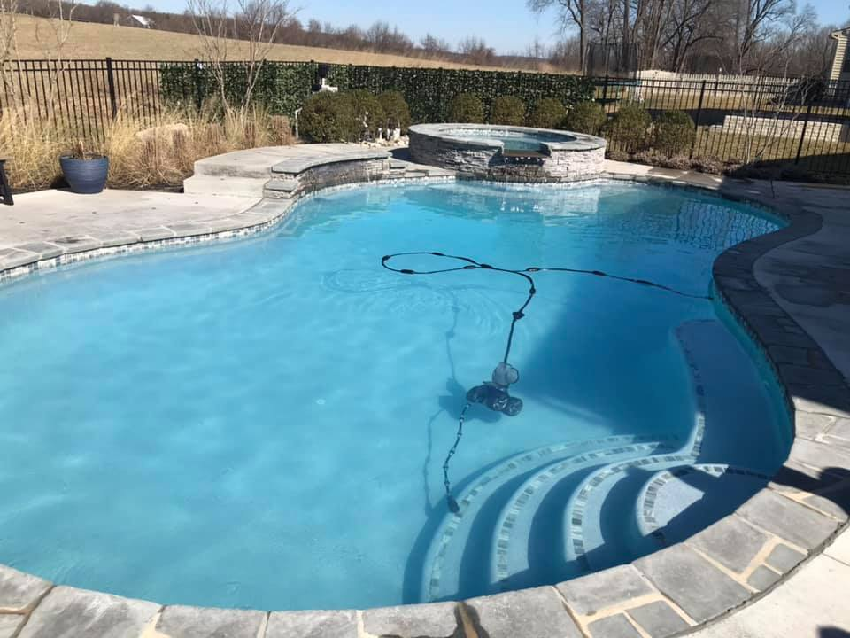

About Dixon
A Frederick-area family pool service
Dixon Pool Service was established in 2005 by Thomas Dixon Sr. and serves Frederick and surrounding counties.
Who We Are
Dixon Pool Service was established in 2005 by Thomas Dixon, Sr. A twenty-five-year veteran in the pool and spa industry. He first started in the above ground pool business and later graduated to run the largest retail pool parts department in New Jersey. Shortly after that, he discovered he had a knack for repairing the equipment customers were trying to replace.
After moving his family to Maryland, Thom started working for a small inground pool service company. Due to his efforts, the company grew and became a major force in the pool and spa industry.
Seeing that customers were not getting their customer service needs properly met, Thom started Dixon Pool Service. He was joined that first year by his son, Thomas Jr. who now manages most of the day-to-day operations.
The company grew quickly and now includes his son-in-law and grandson making this a true family business. The rest of the crew may not be family but has been with the company for years, making Dixon Pool Service the premiere pool service company in the Frederick area.


Why Choose Dixon?
Dixon Pool Service does not sell just one brand of pool equipment, we sell the best models of the various categories from all the major brand names. There’s no brand loyalty. We sell superior products, along with superior service, to give our customers the superior experience!
We want our customers satisfied and happy with their service and have grown our company with this strong customer service model in place.
The pool service industry, compared to other trades is quite small and extremely specialized. You can’t get a plumber to replace your pump motor. You can’t get an electrician to re-plumb your pool filter. They don’t know why your pool keeps turning green or how to make it sparkling clear. We are plumbers, electricians, chemists and sometimes salesmen all rolled into one
Dixon Pool Service is highly rated across all major review platforms.